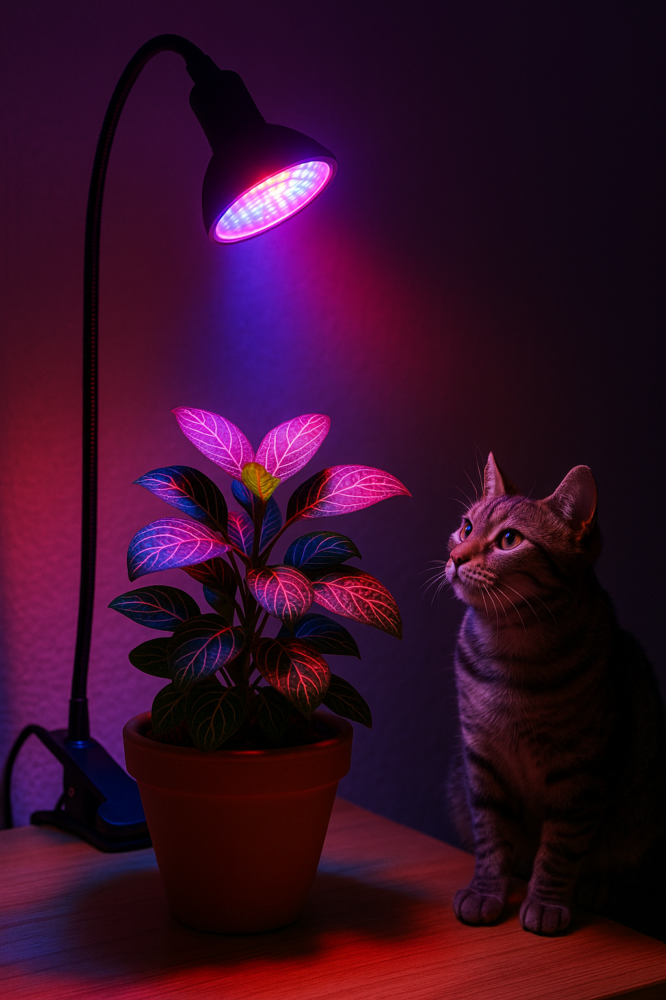

💡 Iluminação artificial para cantos escuros

Nem todo ambiente da casa recebe luz solar suficiente. Escritórios, banheiros, corredores e alguns cantos da sala podem parecer inóspitos para plantas – mas com a tecnologia certa, é possível cultivar até mesmo espécies exigentes em luz.
A solução? A iluminação artificial de espectro completo, conhecida como LED Full Spectrum. Esses dispositivos reproduzem, de forma aproximada, o espectro de luz solar natural, promovendo fotossíntese adequada mesmo em locais fechados.
🔬 Como funciona?
Os LEDs combinam luzes de diferentes comprimentos de onda:
- 🔵 Luz azul (450–470 nm): estimula o crescimento vegetativo (folhas e caules)
- 🔴 Luz vermelha (620–660 nm): favorece raízes e floração
- ⚪ Luz branca: contribui com a ambientação visual e ciclo diário
Esses LEDs são econômicos, duráveis e não aquecem demais – o que os torna seguros para gatos curiosos. Também podem ser usados com timers, simulando o nascer e pôr do sol.
📏 Posicionamento ideal:
Mantenha a lâmpada a 15 a 30 cm da planta, por 10 a 14 horas diárias.
🌱 Plantas que se beneficiam muito:
- Fitônias
- Peperômias
- Calatheas e Marantas
- Espadas-de-São-Jorge
- Zamioculcas
Com a iluminação certa, até o canto mais escuro da sua casa pode se tornar um oásis verde — e totalmente seguro para os felinos!
← Voltar para o blog